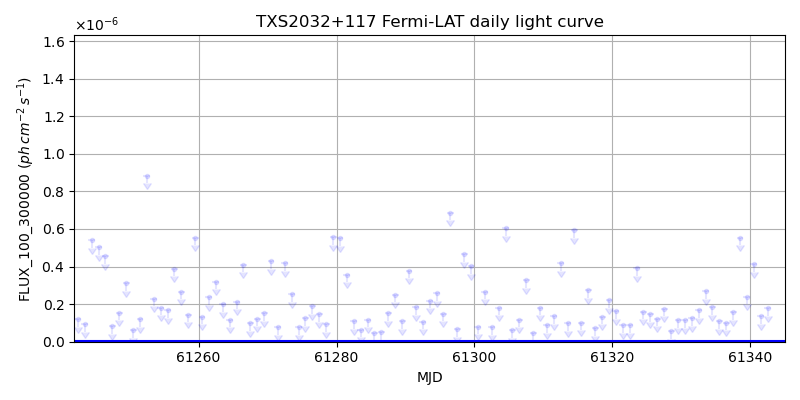
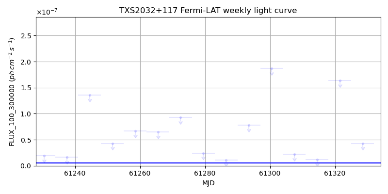
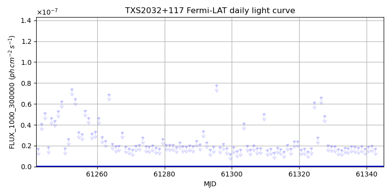
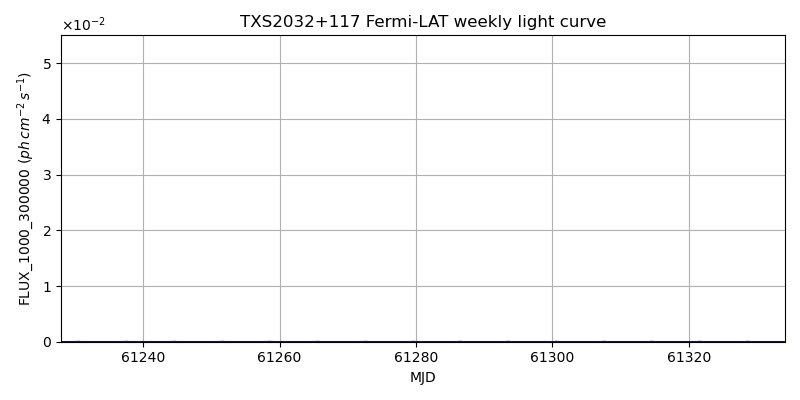

LAT Lightcurve site: https://fermi.gsfc.nasa.gov/ssc/data/access/lat/msl_lc/source/TXS_2032p117
NED: Query
Time of last update of this page: UT: 2026-10-17 15:27 (MJD: 61330.644)
| Property | Value |
|---|---|
| R.A. | 20:34:37.20 |
| Dec. | 11:54:32.4 |
| z | 0.607 |
| 3FGL SpectrumType | PowerLaw |
| 3FGL PL Index | 2.47 |
| 3FGL Flux_100_300000 | 1.45e-08 1 / (s cm2) |
| 3FGL Flux_1000_300000 | 4.86e-10 1 / (s cm2) |
| 3FGL Flux >200 GeV | 1.96e-13 1 / (s cm2) |
| 3FGL Extrap. Crab >200 GeV | 0.00 |
| 3FGL Flux After EBL Absorption >200GeV | 1.94e-14 1 / (s cm2) |
| 3FGL EBL Crab Fraction >200GeV | 0.00 |

| MJD | dMJD | Flux | dFlux | Frac3FGL | FracCrab>200GeV | EBLFracCrab>200GeV |
|---|---|---|---|---|---|---|
| 61325.50 | 0.50 | 1.46e-07 | 0.00e+00 | 0.00 | 0.00 | 0.00 |
| 61326.50 | 0.50 | 1.22e-07 | 0.00e+00 | 0.00 | 0.00 | 0.00 |
| 61327.50 | 0.50 | 1.75e-07 | 0.00e+00 | 0.00 | 0.00 | 0.00 |
| 61328.50 | 0.50 | 5.69e-08 | 0.00e+00 | 0.00 | 0.00 | 0.00 |
| 61329.50 | 0.50 | 1.16e-07 | 0.00e+00 | 0.00 | 0.00 | 0.00 |

| MJD | dMJD | Flux | dFlux | Frac3FGL | FracCrab>200GeV | EBLFracCrab>200GeV |
|---|---|---|---|---|---|---|
| 61293.50 | 3.50 | 7.78e-08 | 0.00e+00 | 0.00 | 0.00 | 0.00 |
| 61300.50 | 3.50 | 1.87e-07 | 0.00e+00 | 0.00 | 0.00 | 0.00 |
| 61307.50 | 3.50 | 2.17e-08 | 0.00e+00 | 0.00 | 0.00 | 0.00 |
| 61314.50 | 3.50 | 1.14e-08 | 0.00e+00 | 0.00 | 0.00 | 0.00 |
| 61321.50 | 3.50 | 1.64e-07 | 0.00e+00 | 0.00 | 0.00 | 0.00 |

| MJD | dMJD | Flux | dFlux | Frac3FGL | FracCrab>200GeV | EBLFracCrab>200GeV |
|---|---|---|---|---|---|---|
| 61325.50 | 0.50 | 2.79e-08 | 0.00e+00 | 0.00 | 0.00 | 0.00 |
| 61326.50 | 0.50 | 6.60e-08 | 0.00e+00 | 0.00 | 0.00 | 0.00 |
| 61327.50 | 0.50 | 4.84e-08 | 0.00e+00 | 0.00 | 0.00 | 0.00 |
| 61328.50 | 0.50 | 2.04e-08 | 0.00e+00 | 0.00 | 0.00 | 0.00 |
| 61329.50 | 0.50 | 1.97e-08 | 0.00e+00 | 0.00 | 0.00 | 0.00 |

| MJD | dMJD | Flux | dFlux | Frac3FGL | FracCrab>200GeV | EBLFracCrab>200GeV |
|---|---|---|---|---|---|---|
| 61293.50 | 3.50 | 8.16e-09 | 0.00e+00 | 0.00 | 0.00 | 0.00 |
| 61300.50 | 3.50 | 2.58e-09 | 0.00e+00 | 0.00 | 0.00 | 0.00 |
| 61307.50 | 3.50 | 3.68e-09 | 0.00e+00 | 0.00 | 0.00 | 0.00 |
| 61314.50 | 3.50 | 2.36e-09 | 0.00e+00 | 0.00 | 0.00 | 0.00 |
| 61321.50 | 3.50 | 7.82e-09 | 0.00e+00 | 0.00 | 0.00 | 0.00 |
--------------------------------------------------------- Using user-supplied coords: 20:34:37.20 11:54:32.4 2000 --------------------------------------------------------- FLWO UT night of: 2026-10-18 Local Sid. @ Midnight: 01:23 Sunset (-15.0) (local, UT): 18:56 01:56 Sunrise (-15.0) (local, UT): 05:22 12:22 Moonrise (local, UT): Moonset (local, UT): 22:59 05:59 Moon phase: 0.47 --------------------------------------------------------- AzTime LSID UT Obj_el Obj_az Mn_el Mn_az Sep. --------------------------------------------------------- 18:56 20:18 01:56 69.9 167.7 30.5 195.3 42.4 19:26 20:48 02:26 70.1 189.3 28.5 202.5 42.3 19:56 21:18 02:56 68.0 209.1 25.9 209.3 42.1 20:26 21:48 03:26 64.1 224.6 22.6 215.6 42.0 20:56 22:19 03:56 59.2 236.1 18.8 221.3 41.9 21:26 22:49 04:26 53.6 244.8 14.5 226.6 41.7 21:56 23:19 04:56 47.7 251.7 9.9 231.4 41.5 22:26 23:49 05:26 41.5 257.3 5.0 235.7 41.4 22:56 00:19 05:56 35.2 262.2 0.2 239.8 41.2 23:26 00:49 06:26 28.9 266.5 -5.5 243.5 41.0 23:56 01:19 06:56 22.5 270.6 -11.3 247.0 40.8 00:26 01:49 07:26 16.1 274.4 -17.0 250.4 40.6 00:56 02:19 07:56 9.8 278.2 -22.8 253.6 40.4 01:26 02:49 08:26 3.6 282.0 -28.7 256.7 40.2 01:56 03:19 08:56 -1.7 286.0 -34.7 259.8 40.0 02:26 03:49 09:26 -8.9 290.1 -40.7 263.0 39.8 02:56 04:20 09:56 -14.8 294.6 -46.8 266.4 39.6 03:26 04:50 10:26 -20.5 299.5 -52.8 270.1 39.4 03:56 05:20 10:56 -26.0 304.9 -58.9 274.3 39.2 04:26 05:50 11:26 -31.0 311.0 -64.9 279.6 39.0 04:56 06:20 11:56 -35.6 317.9 -70.8 287.0 38.8 05:22 06:46 12:22 -39.1 324.6 -75.7 297.1 38.7 --------------------------------------------------------- Dark hours >55 deg.: 0.00